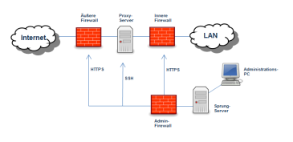

Die in diesem Dokument beschriebenen Umsetzungshinweise geben Hinweise und Hilfestellung, wie die Anforderungen des Bausteins OPS.1.1.2 Ordnungsgemäße IT-Administration geeignet umgesetzt werden können. Sie stellen Vorschläge dar, die den typischen Gegebenheiten in einem Informationsverbund gerecht werden. Sie schließen nicht aus, dass die Anforderungen des Bausteins auch auf anderen, für einen individuellen Informationsverbund möglicherweise besser geeigneten Wegen erreicht werden können.
1.2 Lebenszyklus
Der Baustein OPS.1.1.2Ordnungsgemäße IT-Administration beschreibt IT-Prozesse. Von daher beschäftigt er sich hauptsächlich mit der Lebenszyklusphase Umsetzung, nur einzelne Aspekte reichen in andere Lebenszyklusphasen hinein.
Planung und Konzeption
Um einen ordnungsgemäßen IT-Administrationsprozess zu etablieren, sind verschiedene Vorüberlegungen erforderlich. Aufgaben und Befugnisse im IT-Betrieb müssen für die Beteiligten klar ersichtlich sein, wichtige Grundregeln sollten in einer Richtlinie fixiert sein (siehe hierzu OPS.1.1.2.M7 Regelung der IT-Administrationstätigkeit). Wegen der umfassenden Berechtigungen sind Administrationstätigkeiten besonders sensibel. Dies ist durch entsprechende Vorgaben für die Einstellung von Personal (siehe hierzu OPS.1.1.2.M3 Geregelte Einstellung von IT-Administratoren) und für die Freisetzung (siehe hierzu OPS.1.1.2.M4 Beendigung der Tätigkeit als IT-Administrator) zu berücksichtigen.
Sofern für die IT-Umgebung Hochverfügbarkeitsanforderungen bestehen, muss sichergestellt werden, dass die eingesetzten Komponenten, Architekturen und Prozesse diesen Anforderungen gerecht werden (siehe hierzu OPS.1.1.2.M19 Berücksichtigung von Hochverfügbarkeitsanforderungen).
Beschaffung
Beschaffungsprozesse werden von diesem Baustein nicht berührt.
Umsetzung
Bei der Umsetzung eines ordnungsgemäßen Administrationsprozesses müssen verschiedene Sicherheitsvorgaben berücksichtigt werden. Zunächst müssen geeignete Personen zur Wahrnehmung der festgelegten Administrationsrollen ausgewählt werden (siehe hierzu OPS.1.1.2.M1 Personalauswahl für administrative Tätigkeiten). Für diese Personen müssen entsprechende Administrationskonten eingerichtet werden (siehe hierzu OPS.1.1.2.M5 Administrationszugänge), wobei der administrative Zugang zu IT-Systemen und Komponenten geeignet geschützt werden sollte (siehe hierzu OPS.1.1.2.M6 Schutz administrativer Zugänge). Bei erhöhtem Schutzbedarf sollte dies auch eine netzseitige Abschirmung administrativer Zugänge und Oberflächen umfassen (siehe hierzu OPS.1.1.2.M16 Zugangsbeschränkungen für administrative Zugänge).
Administrative Zugriffe erfolgen nicht nur auf Systemebene, sondern häufig auch innerhalb von Fachanwendungen. Auch solche administrativen Aufgaben müssen im Betrieb geeignet abgebildet werden (siehe hierzu OPS.1.1.2.M8 Administration von Fachanwendungen). Wenn die Größe der Organisation es erlaubt, oder erhöhte Anforderungen an die Integrität es erfordern, sollten verschiedene administrative Aufgaben personell voneinander getrennt werden (siehe hierzu OPS.1.1.2.M15 Aufteilung von IT-Administrationstätigkeiten). Die für den IT-Betrieb vorhandenen Personalressourcen müssen ausreichen, um einen ordnungsgemäßen Systembetrieb auch bei Zwischenfällen oder Personalausfällen aufrecht zu erhalten (siehe hierzu OPS.1.1.2.M9 Ressourcenplanung).
Bei erhöhtem Schutzbedarf kann es zusätzlich erforderlich werden, administrative Tätigkeiten durchgängig zu protokollieren (siehe hierzu OPS.1.1.2.M18 Durchgängige Protokollierung administrativer Tätigkeiten) und/oder durchgängig im Vier-Augen-Prinzip durchzuführen (siehe hierzu OPS.1.1.2.M17 IT-Administration im Vier-Augen-Prinzip).
Betrieb
Im laufenden Betrieb ist insbesondere sicherzustellen, dass administrative Tätigkeiten geeignet dokumentiert werden (siehe hierzu OPS.1.1.2.M11 Dokumentation von IT-Administrationstätigkeiten). Damit das eingesetzte Personal mit Entwicklungen Schritt hält, die die Sicherheit ihres Informationsverbunds betreffen, sind geeignete Maßnahmen zur fortlaufenden Qualifizierung und Information erforderlich (siehe hierzu OPS.1.1.2.M10 Fortbildung und Information).
Aussonderung
Dieser Baustein enthält keine Anforderungen an die Aussonderung.
Notfallvorsorge
Damit auch in Notfallsituationen die Durchführung einer ordnungsgemäßen IT-Administration möglich bleibt, müssen geeignete Vorkehrungen getroffen werden (siehe hierzu OPS.1.1.2.M2 Vertretungsregelungen und Notfallvorsorge).
2 Maßnahmen
Im Folgenden sind spezifische Umsetzungshinweise im Bereich "Ordnungsgemäße IT-Administration" aufgeführt.
2.1 Basis-Maßnahmen
Die folgenden Maßnahmen sollten vorrangig umgesetzt werden:
OPS.1.1.2.M1 Personalauswahl für administrative Tätigkeiten[Leiter IT, Leiter Personal]
IT-Administratoren müssen über die erforderliche berufliche Qualifikation verfügen, um die ihnen übertragenen Aufgaben ordnungsgemäß bewältigen zu können. Für Administratoren bedeutet dies im Regelfall eine IT-bezogene Berufsausbildung , ein entsprechendes Studium oder eine langjährige Berufspraxis im IT-Bereich. Ergänzend können interne Schulungen oder Weiterbildungen die Qualifizierung der entsprechenden Mitarbeiter sicherstellen. Beispielsweise können so im Bedarfsfall zusätzliche Kenntnisse vermittelt werden, die für die jeweilige Aufgabe benötigt werden.
Mitarbeiter, die eine administrative Rolle haben, dürfen nicht gleichzeitig eine kontrollierende Rolle (z.B. Revision) übernehmen. Außerdem ist die Rolle Administration auch nicht mit allen anderen Rollen in einer Institution vereinbar, da es hier zu Interessenkonflikten kommen kann.
Für die Übernahme von Administrationsaufgaben muss gewährleistet sein, dass jedem Administrator und ebenso den Vertretern für eine sorgfältige Aufgabenerfüllung auch die hierfür erforderliche Zeit zur Verfügung steht. Hierbei muss auch berücksichtigt werden, dass Aus- und Fortbildungsmaßnahmen erforderlich sind.
Um zu ermitteln, welche Spezialkenntnisse in der IT-Administration erforderlich sind, und wie diese abgedeckt werden können, empfiehlt es sich, zunächst eine Übersicht der eingesetzten Plattformen , Produkte und Techniken zu erstellen. Dabei ist zu unterscheiden, welche Fertigkeiten von jedem einzelnen IT-Administrator beherrscht werden müssen, und welche vom IT-Administrationsteam insgesamt abzudecken sind. In einer Matrix kann dann ermittelt werden, bei welchen Personen die entsprechenden Kenntnisse vorhanden sind, und wie diese erworben wurden (Studium, Ausbildung, berufliche Praxis oder Schulung). Findet sich kein Kandidat mit allen geforderten Qualifikationen, so kann geprüft werden, ob vorhandene Lücken im Rahmen von Qualifizierungsmaßnahmen geschlossen werden können.
Bei den erforderlichen Qualifikationen sind auch Sprachkenntnisse zu berücksichtigen: So ist es zur Vermeidung von Missverständnissen erforderlich, dass IT-Administratoren die Sprache beherrschen, die von den Anwendern ihrer Systeme gesprochen wird, damit sie deren Anforderungen oder Problembeschreibungen verstehen und bearbeiten können. In multinationalen Institutionen kann dafür ersatzweise auch eine vereinbarte Konzernsprache, in der Regel Englisch, zum Einsatz kommen.
Eine gute Lesefähigkeit der englischen Sprache inklusive läufiger Fachtermini ist für IT-Administratoren auch deshalb von Bedeutung, weil Informationen aus Systemdokumentation, Anleitungen oder Fachforen häufig nur in englischer Sprache verfügbar sind.
Werden administrative Aufgaben an Dritte übertragen (z. B. externe Dienstleister oder freie Mitarbeiter), so müssen die erforderlichen Qualifikationen bei der Auswahl der Auftragnehmer und der Vergabe des Auftrags ebenfalls berücksichtigt werden. Dazu sollten entsprechende Vereinbarungen getroffen werden, welche Mindestqualifikationen das eingesetzte Personal erfüllen muss und welche laufenden Qualifizierungsmaßnahmen erfolgen sollen.
IT-Administratoren müssen über eine geeignete Persönlichkeit verfügen, um die ihnen übertragenen Aufgaben zuverlässig und sorgfältig zu erledigen. Bei der Besetzung von Stellen durch internes Personal gibt hierzu die bisherige Führung der betroffenen Personen gute Hinweise. Hierzu sollten entsprechende Informationen von den bisherigen Vorgesetzten eingeholt werden. Bei externen Kandidaten gibt die Überprüfung von Arbeitszeugnissen und weiteren Bewerbungsunterlagen wichtige Einblicke in den beruflichen Werdegang und kann Hinweise auf die generelle Eignung zur jeweiligen Tätigkeit und die Zuverlässigkeit im Allgemeinen geben. Im Rahmen der vereinbarten Probezeit muss überprüft werden, ob die Personen tatsächlich für die ihnen anvertrauten Aufgaben geeignet sind.
Für alle Mitarbeiter in der IT-Administration sollte im Rahmen des gesetzlich Erlaubten eine Prüfung des persönlichen Hintergrunds erfolgen, z. B. durch die Einholung eines persönlichen Führungszeugnisses.
Auch bei der Übertragung von administrativen Aufgaben an Dritte ist die Zuverlässigkeit des eingesetzten Personals sicherzustellen. Dazu muss vereinbart werden, ob die Prüfung durch den Auftragnehmer erfolgt und geeignet nachgewiesen wird, oder ob dem Auftraggeber entsprechende Befugnisse zur Überprüfung eingeräumt werden. Weiterhin ist festzulegen, wie verfahren wird, wenn der Auftraggeber den Einsatz bestimmter Personen ablehnt, wenn Hinweise auf persönliche oder fachliche Defizite dies erforderlich machen.
OPS.1.1.2.M2 Vertretungsregelungen und Notfallvorsorge
Für alle administrativen Aufgaben und Verantwortlichkeiten müssen ausreichende Vertretungsregelungen getroffen werden, die sicherstellen, dass die Aufgaben ordnungsgemäß wahrgenommen werden können, auch wenn der verantwortliche Mitarbeiter ausfällt. Im Falle des Ausfalls eines IT-Administrators sollten Regelungen existieren, die die ordnungsgemäße Wahrnehmung der administrativen Aufgaben gewährleisten. Es sollten für alle Anwendungen und Systeme neben dem Hauptverantwortlichen weitere Personen benannt werden, die für Wartung und Administration fachlich geeignet und mit den jeweiligen Systemen vertraut bzw. geeignet dafür geschult sind. Die Namen und Kontaktmöglichkeiten dieser Mitarbeiter sollten schriftlich festgehalten werden. Ein geeignetes Verfahren muss sicherstellen, dass die Vertreter vom Ausfall eines IT-Administrators Kenntnis erhalten und anstehende Aufgaben übernehmen.
In Notfallsituationen kann zur Umsetzung von Sofortmaßnahmen ein kurzfristiger Zugriff auf Systeme und Anwendungen erforderlich werden, ohne dass ein befugter IT-Administrator verfügbar ist. Für diesen Fall sollten administrative Notfallzugänge eingerichtet werden. Die Zugangsdaten für diese Administrationskennungen sollten derart aufbewahrt werden, dass nur dem befugten Personenkreis ein Zugriff möglich ist. Zudem sollten sie im Bedarfsfall schnell bereitgestellt werden können.
Passwörter sollten möglichst nur dann hinterlegt werden, wenn es keine andere (technische) Lösung gibt. Dabei ist immer zu beachten, dass die Hinterlegung von Passwörtern einen falschen Signalcharakter für den sicheren Umgang mit Passwörtern vermittelt. Passwörter sollten aber immer dann sicher hinterlegt werden, wenn diese die einzige Möglichkeit sind, auf IT-Systeme Zugriff zu nehmen. Dies ist häufig bei Administrator-Zugängen der Fall.
Eine Möglichkeit ist die Aufbewahrung von Authentikationsmitteln in einem nur der Leitungsebene oder einem Notfallteam zugänglichen Schutzschrank. Die Ausgabe der Zugangsdaten sollte dokumentiert werden. Durch die Hinterlegung der Zugangsdaten oder Zugangsmittel in verschlossenen Umschlägen kann erreicht werden, dass ihr Einsatz erkennbar ist und anschließend z. B. eine Änderung der Kennwörter und Hinterlegung in einem neuen Kuvert erfolgt. Es sollte regelmäßig überprüft werden, dass aktuelle Passwörter und Authentikationsmittel hinterlegt sind.
OPS.1.1.2.M3 Geregelte Einstellung von IT-Administratoren[Leiter IT, Leiter Personal]
Wenn Personen in der Institution administrative Aufgaben übernehmen, müssen ihre Aufgaben und Zuständigkeiten schriftlich festgelegt werden, z. B. in Form einer Stellenbeschreibung mit Aufgaben und Kompetenzen.
Sind geeignete interne oder externe Mitarbeiter ausgewählt, die die entsprechenden Voraussetzungen erfüllen (siehe OPS.1.1.2.M1 Personalauswahl für administrative Tätigkeiten), so müssen sie nach einem geregelten Verfahren in ihre Tätigkeit eingeführt werden. Dabei sind mindestens die folgenden Aspekte zu berücksichtigen:
Die Nachweise über die Erfüllung der fachlichen und persönlichen Voraussetzungen sind systematisch abzulegen (z. B. in einer Personalakte).
Eventuell vorhandene Qualifikationslücken sind vor Aufnahme der damit verbundenen Aufgaben durch geeignete Schulungsmaßnahmen zu schließen.
Verpflichtungen und Belehrungen sind durchzuführen (in der Regel mindestens eine Verpflichtung auf das Datengeheimnis nach § 5 BDSG).
Sicherheitsrichtlinien und Sicherheitsbestimmungen der Institutionen sowie die Aufbau- und Ablauforganisation im ISMS sind zu vermitteln.
Meldewege und Ansprechpartner für Sicherheitsvorfälle sind bekannt zu machen.
Die Struktur und die eingesetzten Verfahren für die Dokumentation sind zu erläutern.
Personenbezogene Administrationskonten sind im erforderlichen Umfang einzurichten. Die Zugangsmittel (Kennwörter, Smartcards, Token…) sind zu initialisieren und sicher zu übergeben.
Die IT-Administratoren sind in die von ihnen zu betreuenden Systeme und Netze einzuweisen.
Um eine vollständige Umsetzung dieser und eventueller weiterer, für die jeweilige Institution relevanter Punkte sicherzustellen, empfiehlt sich die Gestaltung von Checklisten oder Laufzetteln, die von den neuen IT-Administratoren abzuarbeiten sind und gleichzeitig die ordnungsgemäße Durchführung aller Aufgaben dokumentieren.
OPS.1.1.2.M4 Beendigung der Tätigkeit als IT-Administrator[Leiter IT, Leiter Personal]
Wenn interne oder externe Mitarbeiter von einer Tätigkeit in der IT-Administration entbunden werden, muss ebenfalls sichergestellt werden, dass alle Unterlagen, Arbeitsmaterialien und Befugnisse wieder entzogen werden. Dies umfasst z. B.:
Deaktivierung/Sperrung von Administrations- und Benutzerkonten
Änderung von Kennwörtern nicht-personenbezogener administrativer Zugänge, deren Kennwörter dem ausscheidenden Mitarbeiter bekannt sind.
Änderung der Kennwörter für WLAN-Zugänge
Sperrung von VPN- oder Remote-Zugängen
Sperrung von Benutzer- und Gerätezertifikaten, deren zugehörige Schlüssel unter der Gewalt des Mitarbeiters stehen oder standen
Sperrung von Zugängen zu externen Diensten (z. B. Cloud-Anwendungen)
Abgabe von Zutrittskarten oder Authentisierungsmitteln (Smartcards, Token)
Rückgabe von mobilen IT-Geräten
Prüfung und Anpassung von Alarmierungsplänen und Vertretungsregelungen
Information betroffener Stellen über das Ausscheiden des Mitarbeiters (Mitarbeiter, Wachschutz, Pforte, Dienstleister, Lieferanten, Domainverwalter).
Die hier aufgeführten Punkte stellen Beispiele dar, die für die jeweils eigene Institution zu prüfen und nach Bedarf um weitere Punkte zu ergänzen sind.
Auch für die Freisetzung von IT-Administratoren empfiehlt sich der Einsatz entsprechender Checklisten oder Laufzettel, um die vollständige Abarbeitung der erforderlichen Schritte sicherzustellen und zu dokumentieren.
OPS.1.1.2.M5 Administrationskennungen
Für den administrativen Zugang zu IT-Systemen und Anwendungen müssen personenbezogene Administrationskennungen eingerichtet und verwendet werden, soweit dies technisch möglich ist. Die Nutzung einer zentralen Administrationskennung durch mehrere Personen führt dazu, dass Vorgänge nicht der ausführenden Person zugeordnet werden können. Daher muss für jede administrativ tätige Person eine zusätzliche administrative Kennung zur Verfügung gestellt werden.
Sofern der Einsatz übergreifender, nicht personenbezogener administrativer Kennungen im Einzelfall unumgänglich ist, sollte sichergestellt werden, dass die Verwendung der Kennung nachvollziehbar dokumentiert wird. Dies kann z. B. auf Unix-Systemen erreicht werden, indem zunächst eine Anmeldung mit einer persönlichen Kennung erfolgt und von dort mit dem Kommando „su“ auf die übergreifende Kennung (z. B. „root“) gewechselt wird. Denkbar wäre ein Nachweis auch durch die Nutzung sogenannter Sprungserver, auf denen aus einer personenbezogenen Sitzung heraus administrative Zugänge verwendet werden. Ist eine technische Umsetzung aufgrund besonderer Umstände überhaupt nicht möglich, sollten von den IT-Administratoren ersatzweise Aufzeichnungen über die Verwendung übergreifender Administrationskennungen geführt werden.
Die Rechte der Administrationszugänge sind immer den jeweiligen Erfordernissen anzupassen. Für einen Mitarbeiter, der ausschließlich die Datenbank administriert, sind beispielsweise keine Systemverwalter-Rechte oder Zugang zur Konfiguration des Mailservers notwendig. Gegebenenfalls davon abgeleitete Rechte, wie zum Beispiel die Möglichkeit, den Datenbank-Dienst auf Betriebssystemebene zu starten und zu beenden, müssen im Bedarfsfall ebenfalls vergeben werden.
Für Routinetätigkeiten muss eine persönliche, unprivilegierte Kennung benutzt werden. Dies umfasst alle nicht-administrativen Tätigkeiten, wie zum Beispiel Recherchetätigkeiten oder E-Mail-Kommunikation. So wird sichergestellt, dass einerseits keine unbeabsichtigten administrativen Änderungen am Informationsverbund stattfinden, andererseits aber auch Angriffe über externe Kommunikationsschnittstellen (E-Mail, WWW) nicht direkt auf Zugänge mit administrativen Berechtigungen wirken können.
Beispiel: Beim versehentlichen Ausführen eines als E-Mail-Anhang eingeschleusten Verschlüsselungstrojaners unter einer administrativen Kennung kann die Schadsoftware in kurzer Zeit sämtliche Dokumente in den Dateiablagen im Netz verschlüsseln. Erfolgt dasselbe Szenario unter Nutzung einer eingeschränkten Benutzerkennung, so ist der Schaden beschränkt auf die Dateien, die unter dieser Kennung im Schreibzugriff zugänglich sind.
OPS.1.1.2.M6 Schutz administrativer Kennungen
Der Zugang zu Administrationskennungen muss durch geeignete Authentisierungsmechanismen angemessen geschützt sein. Für Administrationskennungen sollte eine Zwei-Faktor-Authentisierung verwendet werden, bei der in der Regel zusätzlich zum Passwort ein weiterer Faktor hinzukommt, z. B.
Hardware-Token mit dynamisch generierten Codes,
mobile Geräte, an die dynamisch erzeugte Anmeldecodes gesendet werden,
kryptographische Zertifikate, die an ein bestimmtes Gerät oder eine bestimmte Hardware (Chipkarte/Token) gebunden sind,
biometrische Authentisierungsverfahren, sofern sie eine ausreichende Zuverlässigkeit und Sicherheit bieten.
Bei erhöhtem Schutzbedarf muss eine Zwei-Faktor-Authentisierung verwendet werden.
Auf diese Weise wird verhindert, dass ein potenzieller Angreifer alleine durch das Ausspähen von Passwörtern Zugriff auf geschützte Systeme bekommt, da ein weiterer Faktor, z. B. der Besitz einer Hardware oder entsprechende biometrische Eigenschaften, für eine Anmeldung erforderlich ist.
Einen etwas schwächeren Schutz bieten kryptographische Zertifikate, die in Software abgelegt und durch ein Passwort geschützt sind. Die Verwendung solcher Zertifikate kann z. B. beim Einsatz von SSH konfiguriert werden. Die Ablage der Zertifikate sollte so erfolgen, dass ein unbefugter Zugriff ausgeschlossen wird. Gegenüber hardwaregebundenen Zertifikaten besteht hierbei die grundsätzliche Gefahr, dass das Zertifikat von einem Angreifer kopiert und das Zugangspasswort ausgespäht oder erraten wird, dennoch bietet dieses Verfahren einen deutlichen Sicherheitsgewinn gegenüber Passwörtern alleine.
Bei der Verwendung von Benutzernamen und Passwörtern muss eine Passwortrichtlinie mit entsprechend hohen Anforderungen an die Komplexität von Passwörtern Anwendung finden. Da lange und komplexe Kennwörter nur schwierig zu merken sind, können Passwortverwaltungs-Programme zum Einsatz kommen, die Passwörter in einer verschlüsselten Datenbank ablegen. Diese Datenbank muss ihrerseits mit einem starken Passwort geschützt sein.
Passwörter für selten genutzte, privilegierte Zugänge (z. B. hinterlegte Notfallnutzer oder technische Nutzer von Diensten oder Datenbanken), bei denen eine Anmeldung durch IT-Administratoren nur im Ausnahmefall erfolgen muss, sollten deutlich länger gewählt werden, als es die Mindestvorgaben für Benutzerpasswörter in der Institution erfordern, um die Robustheit gegen Angriffe zu erhöhen.
Für Administrationszugriffe müssen sichere Protokolle verwendet werden, die die Kommunikation verschlüsseln, sofern nicht die lokale Konsole verwendet wird. Bei Unix-Derivaten sollte beispielsweise SSH und bei Windows RDP verwendet werden. Der Zugriff auf Web-Oberflächen muss mittels TLS abgesichert sein.
Jeder Anmeldevorgang über Administrationskennung muss protokolliert werden. Die Protokollierung muss idealerweise derart erfolgen, dass der angemeldete Benutzer keine Möglichkeit hat, das Protokoll zu verändern. Dies kann zum Beispiel realisiert werden, in dem die Protokollierung über ein Protokoll wie z. B. syslog auf einem separaten Protokollierungssystem erfolgt. Dabei ist sicherzustellen, dass das betroffene System und das Protokollierungssystem über eine einheitlich synchronisierte Systemzeit verfügen, um die Rekonstruktion von Vorgängen anhand der Protokolldaten zu erleichtern.
2.2 Standard-Maßnahmen
Gemeinsam mit den Basis-Maßnahmen entsprechen die folgenden Maßnahmen dem Stand der Technik im Bereich "Ordnungsgemäße IT-Administration".
OPS.1.1.2.M7 Regelung der IT-Administrationstätigkeit[Leiter IT, Leiter Personal]
Mitarbeiter mit IT-Administrationsaufgaben benötigen für ihre Arbeit umfangreiche Zugriffsmöglichkeiten auf Systeme, Anwendungen und Datenbestände. Administrative Zugriffe unterliegen oft gerade nicht der Berechtigungssteuerung, weil z. B. bei der Fehleranalyse umfassende Zugriffsmöglichkeiten erforderlich sind, oder weil die Systeme und Anwendungen eine Rechteeinschränkungen für Administratoren gar nicht vorsehen. Aber nicht alles, was die Mitarbeiter mit ihren Berechtigungen tun können, dürfen sie auch tun – sonst wäre ein ordnungsgemäßer und nachvollziehbarer IT-Betrieb nicht mehr gegeben. Für Zugriffe auf personenbezogene Daten oder Telekommunikationsinhalte gelten zudem gesetzliche Beschränkungen, die auch in der IT-Administration umgesetzt werden müssen.
Die Institution sollte daher Regelungen für die IT-Administration treffen und diese verbindlich in einer Arbeitsanweisung oder Richtlinie festschreiben. Dabei sollten folgende Inhalte berücksichtigt werden:
Die Organisation des IT-Betriebs sollte beschrieben werden. Dies umfasst insbesondere die Aufgabenteilung in der IT-Administration inklusive entsprechender Vertretungsregelungen. Für jede IT-Komponente oder Anwendung muss klar nachvollziehbar sein, wer die administrative Verantwortung trägt. In größeren Institutionen kann auch eine Abgrenzung der Verantwortung für Planung, Beschaffung und Einführung, Betrieb und Weiterentwicklung sowie Aussonderung sinnvoll sein.
Die Rolle Administration ist nicht mit allen anderen Rollen in einer Institution vereinbar. Beispielsweise muss beim Einsatz von Protokollierung auf die Rollentrennung von Administration und Revision geachtet werden. In Bereichen mit erhöhten Sicherheitsanforderungen können weitere Rollenausschlüsse erforderlich sein (siehe OPS.1.1.2.M14).
Bei größeren Institutionen mit einer Vielzahl verschiedener IT-Systeme und Teilnetzen muss außerdem sichergestellt sein, dass die Aufgaben zwischen den verschiedenen Administratoren so verteilt sind, dass es zu keinen Zuständigkeitsproblemen kommt, also weder zu Überschneidungen noch zu Lücken in der Aufgabenverteilung. Darüber hinaus sollte die Kommunikation zwischen den verschiedenen Administratoren möglichst reibungslos ablaufen. Hierzu können z. B. regelmäßige Administratoren-Treffen durchgeführt werden, bei denen typische Probleme und Lösungsmöglichkeiten bei der täglichen Arbeit thematisiert werden.
Regeln für den Umgang mit administrativen Zugängen sollten festgelegt werden (siehe OPS.1.1.2.M4).
Befugnisse und Pflichten der Administratoren sollten beschrieben sein. Dazu gehört insbesondere auch ein Verbot des Zugriffs auf schützenswerte Datenbestände (z. B. E-Mail-Postfächer, Protokolldaten), wenn für den Zugriff keine betriebliche Notwendigkeit besteht.
Für Änderungen am Informationsverbund sollten Antrags- und Freigabeverfahren etabliert werden. IT-Administratoren dürfen keine Änderungen vornehmen, für die nicht ein Auftrag und eine Freigabe vorliegen, oder die zur unmittelbaren Gefahrenabwehr erforderlich sind.
Dokumentationspflichten der IT-Administratoren sollten beschrieben werden. Dies schließt die Form der Dokumentation, ihren Ablageort und Verpflichtungen zu einer angemessenen Aktualitätsprüfung ein.
Die Pflichten und Befugnisse der IT-Administratoren im Rahmen der Aufklärung und Abwehr von Sicherheitsvorfällen sollten geregelt sein.
Die Richtlinie oder Arbeitsanweisung sollte von einer dazu befugten Führungsebene in Kraft gesetzt und allen IT-Administratoren zur Kenntnis gebracht werden. Sie muss in der jeweils aktuellen Fassung an einem definierten Ablageort für alle betroffenen Mitarbeiter zugänglich sein. In geeigneten Abständen sollte eine Prüfung und Anpassung sowie Bestätigung der Regelungen erfolgen.
OPS.1.1.2.M8 Administration von Fachanwendungen[IT-Betrieb, Leiter IT]
Häufig nehmen Mitarbeiter in Fachbereichen einer Institution auch administrative Aufgaben für einzelne in Fachanwendungen wahr. Diese können sich mit den administrativen Aufgaben der Administratoren des IT-Betriebs überschneiden. Um eine gegenseitige Beeinträchtigung sowie Unklarheiten über die Verantwortungsbereiche zu vermeiden, sollten die spezifischen Aufgaben der Anwendungsadministratoren und Systemadministratoren schriftlich dokumentiert werden. Zudem sollten feste Ansprechpartner und Kommunikationsschnittstellen definiert werden, um den fachlichen Austausch zu erleichtern.
Sind administrative Eingriffe in den Anwendungsbetrieb notwendig, sollten die Fachadministratoren des jeweiligen Fachbereiches vorher über die anstehende Wartung und damit verbundene Beeinträchtigungen oder Änderungen informiert werden. Dies kann zum Beispiel bei Versionswechseln oder Wartungsfenstern der Fall sein. Zudem sollte eine Abstimmung mit dem Fachbereich angestrebt werden, um den Zeitpunkt des Wartungsfensters möglichst günstig zu legen und Anforderungen der Anwender zu berücksichtigen.
Die Anforderungen dieses Bausteins sind auch für die Anwendungsadministratoren umzusetzen, soweit dies innerhalb der Anwendungen möglich ist. So sollten administrative Aufgaben nur mit dafür vorgesehenen, personalisierten und besonders berechtigten Administrationskonten durchgeführt werden. Der Zugang zu Administrationsoberflächen sollte geeignet geschützt werden. Für den Zugriff auf Datenbestände (wie z. B. Anwendungsprotokolle) mit administrativen Rechten sollten geeignete Regelungen festgeschrieben werden. Geeignete Dokumentationsvorgaben sollten vereinbart werden.
OPS.1.1.2.M9 Ausreichende Ressourcen für den IT-Betrieb
Für alle anfallenden administrativen Tätigkeiten sollten ausreichende Sach- und Personalressourcen bereitgestellt werden, um diese ordnungsgemäß zu bewältigen. Diese sollten sowohl die anfallenden Routineaufgaben, als auch unvorhersehbare Tätigkeiten berücksichtigen. Insbesondere für die Behandlung und Aufklärung sicherheitsrelevanter Ereignisse sollten geeignete Reserven bereitstehen, um derartige Vorfälle zeitnah zu bearbeiten. Eine Aufrechterhaltung eines ordnungsgemäßen IT-Betriebs muss auch gewährleistet sein, wenn IT-Administratoren durch Urlaube, Krankheiten oder Fortbildungen nicht verfügbar sind. Entsprechend ausgebildete Personen sowie die notwendige technische Ausstattung sollten daher in der Ressourcenplanung berücksichtigt werden.
Fehlende Personalressourcen führen im Regelfall dazu, dass Dokumentationstätigkeiten entfallen und die Fehlerquote steigt.
In regelmäßigen Zyklen, beispielsweise jährlich, sollte die Ressourcenplanung einer Überprüfung unterzogen werden. Die Erfassung tatsächlich verwendeter Ressourcen und eine Analyse aller Faktoren hilft dabei, die Planung den aktuellen Erfordernissen anzupassen. Dabei sollte auch die Entwicklung der Bedrohungslage berücksichtigt werden, z. B. durch die Einbeziehung entsprechender Studien von Sicherheitsunternehmen oder Lagebildern von Stellen wie dem Bundesamt für Sicherheit in der Informationstechnik.
Im Zuge der Ressourcenplanung sollten auch für den IT-Betrieb erforderliche Sachmittel berücksichtigt werden. Dazu gehören beispielsweise ausreichend Krypto-Token, um sichere Authentikation von Administratoren bzw. einfache Verschlüsselung vertraulicher Daten zu ermöglichen.
OPS.1.1.2.M10 Fortbildung und Information[Leiter IT, Leiter Personal]
Administratoren sollten kontinuierlich ihren Kenntnisstand entsprechend dem technischen Fortschritt erweitern. Daher sollte es ihnen ermöglicht werden, an passenden Fort- und Weiterbildungsmaßnahmen teilzunehmen. Diese sollten in einem Schulungsplan für das gesamte IT-Administrationsteam festgehalten werden. Ziel ist, das Wissen IT-Administratoren zum einen fachlich auf dem aktuellen Stand der Technik zu halten und zum anderen über neue Entwicklungen zu informieren, die für die Institution aktuell oder zukünftig von Bedeutung sein können. Auch sollte innerhalb des Teams abgestimmt werden, dass relevante Qualifikationen jeweils von mehreren Mitarbeitern abgedeckt werden, so dass Vertretungen möglich sind.
Den IT-Administratoren sollten geeignete Möglichkeiten geschaffen werden, um sich über Neuerungen bei den von ihnen verwalteten Lösungen zu informieren. Viele Anbieter versenden Newsletter oder Benachrichtigungen bei Sicherheitslücken und Produktupdates oder veranstalten Anwenderforen, in denen sie über Neuigkeiten informieren. Bei größeren Neuerungen sollten geeignete Schulungen erfolgen oder Möglichkeiten zu Recherchen und zum Literaturstudium bestehen.
Administratoren sollten sich regelmäßig über die Sicherheit der von ihnen betreuten Systeme, Dienste und Protokolle informieren, vor allem über aktuelle Gefährdungen, bekannt gewordene Schwachstellen und erforderliche Sicherheitsmaßnahmen. Informationsquellen zu diesem Thema sind beispielsweise:
Das Bundesamt für Sicherheit in der Informationstechnik (BSI) (siehe http://www.bsi.bund.de/)
Hersteller bzw. Distributoren von Programmen und Betriebssystemen. Diese informieren oft registrierte Kunden über bekannt gewordene Sicherheitslücken ihrer Systeme und stellen korrigierte Varianten des Systems oder Patches zur Behebung der Sicherheitslücken zur Verfügung.
Computer Emergency Response Teams (CERTs). Dies sind Computer-Notfallteams, die als zentrale Anlaufstelle für präventive und reaktive Maßnahmen in bezug auf sicherheitsrelevante Vorfälle in Computersystemen dienen. CERTs informieren in sogenannten Advisories über aktuelle Schwachstellen in Hard- und Softwareprodukten und geben Empfehlungen zu deren Behebung. Verschiedene Organisationen oder Verbände unterhalten eigene CERTs.
CERT-Bund, Bundesamt für Sicherheit in der Informationstechnik, Postfach 20 03 63, D-53133 Bonn, Telefon: 0228 99-9582-222, Fax: 022899-9582-5427, E-Mail: certbund@bsi.bund.de, WWW: https://www.bsi.bund.de/certbund/
An verschiedenen Hochschulen existieren CERTs, die auch Informationen öffentlich zur Verfügung stellen. Ein Beispiel ist das RUS-CERT der Universität Stuttgart (siehe http://cert.uni-stuttgart.de).
Hersteller- und systemspezifische sowie sicherheitsspezifische Diskussionsgruppen oder Mailinglisten. In solchen Foren werden Hinweise auf existierende oder vermutete Sicherheitslücken oder Fehler in diversen Betriebssystemen und sonstigen Softwareprodukten diskutiert. Besonders aktuell sind meist die englischsprachigen Mailinglisten wie Bugtraq, von denen es an vielen Stellen öffentlich zugängliche Archive gibt, beispielsweise unter http://www.securityfocus.com.
Manche IT-Fachzeitschriften veröffentlichen ebenfalls regelmäßig Beiträge mit einer Übersicht über neue Sicherheitslücken in verschiedenen Produkten.
Idealerweise sollten sich die Administratoren und Sicherheitsbeauftragte bei mindestens zwei verschiedenen Stellen über Sicherheitslücken informieren. Dabei ist es empfehlenswert, neben den Informationen des Herstellers auch eine "unabhängige" Informationsquelle zu benutzen.
Die Administratoren sollten jedoch in jedem Fall auch produktspezifische Informationsquellen des Herstellers nutzen, um beispielsweise darüber Bescheid zu wissen, ob für ein bestimmtes Produkt beim Bekanntwerden von Sicherheitslücken überhaupt Patches oder Updates bereitgestellt werden. Bei Produkten, für die der Hersteller keine Sicherheitspatches mehr zur Verfügung stellt, muss rechtzeitig geprüft werden, ob ein Einsatz unter diesen Umständen noch zu verantworten ist und durch welche zusätzlichen Maßnahmen ein Schutz der betroffenen Systeme trotzdem gewährleistet werden kann.
OPS.1.1.2.M11 Dokumentation von IT-Administrationstätigkeiten[IT-Betrieb, Leiter IT]
Änderungen, die an Systemen oder Fachanwendungen vorgenommen wurden, sollten in geeigneter Form dokumentiert werden. Eine nachvollziehbare Dokumentation ist notwendig, um jederzeit einen Überblick über die IT-Systeme des Informationsverbunds zu haben und einen reibungslosen Betriebsablauf gewährleisten zu können. Dieses muss auch für Vertreter möglich sein, falls ein Administrator unvorhergesehen ausfällt. Eine nachvollziehbare Dokumentation ist auch Voraussetzung, um Prüfungen des Systems (z. B. auf problematische Einstellungen, Konsistenz bei Änderungen) durchführen zu können. Daher sollten die Veränderungen, die Administratoren am System vornehmen, dokumentiert werden, nach Möglichkeit automatisiert. Dieses gilt insbesondere für Änderungen an Systemverzeichnissen und -dateien. Vorhandene Protokollierungsmechanismen von Systemen und Anwendungen sollten dabei in einem geeigneten Umfang aktiviert werden.
Für alle Änderungen sollte außerdem dokumentiert werden, wer die Änderung beauftragt hat, wer sie durchführt und was damit bezweckt werden soll. Hierfür können entsprechende systembezogene Dokumente (Systemlogbücher) eingesetzt werden, aber auch zentrale Ticket-Systeme, in denen unter anderem der ausführende Mitarbeiter, der Anlass, der Zeitpunkt und die Beschreibung der Änderungen selbst erfasst werden. Ist das Ticket-System an eine CMDB (Configuration Management Database) angebunden, lassen sich so alle Änderungen direkt Systemen, Mitarbeitern und Kategorien zuordnen und nachverfolgen.
OPS.1.1.2.M12 Regelungen für Wartungs- und Reparaturarbeiten[IT-Betrieb, Leiter IT]
Um die IT vor Störungen zu bewahren, müssen regelmäßig Wartungsarbeiten durchgeführt werden. Die rechtzeitige Einleitung von Wartungsarbeiten und die Überprüfung ihrer Durchführung sollte von einer zentralen Stelle aus wahrgenommen werden (z. B. Beschaffungsstelle). Die Wartungsarbeiten sollten von vertrauenswürdigen Personen oder Firmen ausgeführt werden, falls sie nicht von eigenem Personal durchgeführt werden können. Die Hinweise des Herstellers müssen dabei unbedingt beachtet werden. Bei regelmäßigen Wartungsarbeiten durch Externe kann der Abschluss eines Wartungsvertrages vorteilhaft sein.
Für jedes IT-System sollte dokumentiert werden, wann es gewartet wurde und welche Fehler dabei behoben wurden(z. B. Gerätepass oder Geräte- bzw. Konfigurationsmanagementsystem). Es empfiehlt sich außerdem, ein Informationssystem für Wartungs- und Reparaturarbeiten einzurichten. Mit einem solchen System können anstehende Arbeiten geplant und durchgeführte Arbeiten dokumentiert sowie der erfolgreiche Verlauf kontrolliert werden.
Außerdem sollte darin dokumentiert sein, wer für die Wartung oder Reparatur von Geräten verantwortlich ist.
Regelmäßige Reinigung von IT-Geräten
Alle Arten von IT-Geräten sollten regelmäßig gereinigt werden. Die hierfür empfehlenswerten Intervalle hängen von der Art des Gerätes bzw. der Einsatzumgebung ab. Mindestens einmal pro Jahr sollte aber eine Reinigung erfolgen, nicht nur weil es unangenehm ist, mit verschmutzten Geräten zu arbeiten, sondern auch weil Verschmutzungen deren Funktionsfähigkeit beeinträchtigen können.
Beispiele: Tastaturen sollten spätestens dann gesäubert werden, wenn sie klebrig werden oder einzelne Tasten klemmen. Ein Arbeitsplatz-PC sollte gelegentlich (z. B. einmal jährlich) auch innen von Staub befreit werden, sofern die Herstellerangaben nicht eine andere Vorgehensweise vorschlagen. Bei Druckern kann bei nachlässiger Reinigung die Druckqualität leiden oder Komponenten in der Funktion eingeschränkt oder sogar beschädigt werden. Typische Problempunkte sind Druckerwalzen, Druckköpfe und Tonerstaub-Ansammlungen.
Zu viel Staub in IT-Systemen kann zu einem Hitzestau führen. Durch Verunreinigungen auf Platinen (besonders wirkungsvoll sind Kombinationen aus Staub und Teer- und Nikotinablagerungen) können Kriechströme verursacht werden.
Ablagerungen sollten daher regelmäßig vorsichtig entfernt werden. Insbesondere sollte für eine wirkungsvolle Lüftung aller IT-Systeme gesorgt werden. Alle Belüfter und Lüftungskomponenten müssen von störenden Verunreinigungen frei gehalten werden.
Bei der Reinigung von IT-Geräten sind unbedingt die Vorgaben des Herstellers zu beachten, sowohl bei der Vorgehensweise und Werkzeug-Auswahl als auch bei den Mindest-Wartungsintervallen.
Wartungs- und Reparaturarbeiten im Hause
Für Wartungs- und Reparaturarbeiten im Hause, vor allem wenn sie durch Externe durchgeführt werden, sind Regelungen über deren Beaufsichtigung zu treffen: während der Arbeiten sollte eine fachkundige Kraft die Arbeiten soweit beaufsichtigen, dass sie beurteilen kann, ob während der Arbeit unautorisierte Handlungen vollzogen werden. Weiterhin ist zu überprüfen, ob der Wartungsauftrag im vereinbarten Umfang ausgeführt wurde.
Als Maßnahmen vor und nach Wartungs- und Reparaturarbeiten sind einzuplanen:
Wartungs- und Reparaturarbeiten sind gegenüber den betroffenen Mitarbeitern rechtzeitig anzukündigen.
Wartungstechniker müssen sich auf Verlangen ausweisen.
Der Zugriff auf Daten durch den Wartungstechniker ist soweit wie möglich zu vermeiden. Falls erforderlich, sind Speichermedien vorher auszubauen oder zu löschen (nach einer kompletten Datensicherung), insbesondere wenn die Arbeiten extern durchgeführt werden müssen. Falls das Löschen nicht möglich ist (z. B. aufgrund eines Defektes), sind die Arbeiten auch extern zu beobachten bzw. es sind besondere vertragliche Vereinbarungen zu treffen und vertrauenswürdige Firmen auszuwählen.
Die dem Wartungstechniker eingeräumten Zutritts-, Zugangs- und Zugriffsrechte sind auf das notwendige Minimum zu beschränken und nach den Arbeiten zu widerrufen bzw. zu löschen.
Nach der Durchführung von Wartungs- oder Reparaturarbeiten sind, je nach "Eindringtiefe" des Wartungspersonals, Passwortänderungen erforderlich. Im IT-Bereich sollte eine Überprüfung auf Schadsoftware durchgeführt werden.
Die durchgeführten Wartungsarbeiten sind zu dokumentieren (Umfang, Ergebnisse, Zeitpunkt, Firmenname sowie eventuell Name des Wartungstechnikers).
Beauftragte Firmen sollten schriftlich zusichern, dass sie einschlägige Sicherheitsvorschriften und Richtlinien (z. B. VdS 2008 Feuergefährliche Arbeiten, Richtlinien für den Brandschutz) beachten. Dies gilt für alle Tätigkeiten, bei denen eine direkte oder indirekte Gefahr für Gebäude oder Menschen entstehen können. Letztlich kommt es darauf an, dass das vor Ort eingesetzte Personal mit diesen Regeln vertraut ist.
Im Anschluss an die Wartungs- oder Reparaturarbeiten ist die ordnungsgemäße Funktion der gewarteten Anlage zu überprüfen. Insbesondere die Rücknahme der für Testzwecke vorgenommenen Eingriffe ist zu kontrollieren.
Externe Wartungs- und Reparaturarbeiten
Werden IT-Systeme zur Wartung oder Reparatur außer Haus gegeben, sind alle sensitiven Daten, die sich auf Datenträgern befinden, vorher physikalisch zu löschen. Ist dies nicht möglich, weil aufgrund eines Defekts nicht mehr auf die Datenträger zugegriffen werden kann, sind die mit der Reparatur beauftragten Unternehmen auf die Einhaltung der erforderlichen Informationssicherheitsmaßnahmen zu verpflichten. Mit diesen sind vertragliche Regelungen über die Geheimhaltung von Daten zu treffen (Vertraulichkeitsvereinbarungen, siehe auch ORP.1 Organisation). Insbesondere ist festzulegen, dass Daten, die im Rahmen der Wartung extern gespeichert wurden, nach Abschluss der Arbeiten sorgfältig gelöscht werden. Ebenso sind die Pflichten und Kompetenzen des externen Wartungspersonals sorgfältig festzulegen.
Bei der Durchführung externer Wartungsarbeiten muss protokolliert werden, welche IT-Systeme oder Komponenten wann an wen zur Reparatur gegeben wurden, wer dies veranlasst hat, was der Wartungs- bzw. Reparaturauftrag umfasst, zu welchem Zeitpunkt die Reparatur abgeschlossen sein sollte und wann das Gerät wieder zurückgebracht wurde. Um dies nachhalten zu können, ist eine Kennzeichnung der IT-Systeme oder Komponenten erforderlich, aus der zum einem hervorgeht, welcher Organisation diese gehören, und zum anderen eine eindeutige Zuordnung innerhalb der Organisation möglich ist.
Beim Versand oder Transport der zu reparierenden Komponenten sollte darauf geachtet werden, dass Beschädigungen und Diebstahl vorgebeugt wird. Befinden sich auf den IT-Systemen noch sensitive Informationen, müssen sie entsprechend geschützt transportiert werden, also z. B. in verschlossenen Behältnissen oder durch Kuriere. Weiterhin müssen Nachweise über den Versand (Reparaturauftrag, Begleitzettel, Versandscheine) und den Eingang beim Empfänger (Empfangsbestätigung) geführt und archiviert werden.
Bei IT-Systemen, die durch Passwörter geschützt sind, müssen je nach Umfang der Reparaturarbeiten und der Art der Passwortabsicherung, alle oder einige Passwörter entweder bekannt gegeben oder auf festgelegte Einstellungen wie "REPARATUR" gesetzt werden, damit die Wartungstechniker auf die Geräte zugreifen können.
Nach der Rückgabe der IT-Systeme oder Komponenten sind diese auf Vollständigkeit zu überprüfen. Alle Passwörter sind zu ändern. Datenträger sind nach der Rückgabe mittels eines aktuellen Viren-Suchprogramms auf Computer-Viren zu überprüfen. Alle Daten oder Programme, die sich auf dem reparierten Gerät befinden, sind auf Integrität zu überprüfen.
Regelungen für die Fernwartung können OPS.2.4 Fernwartung entnommen werden.
OPS.1.1.2.M13 Absicherung von Fernwartung[IT-Betrieb, Informationssicherheitsbeauftragter (ISB)]
Die Fernwartung von IT-Systemen birgt besondere Sicherheitsrisiken. Bei der Fernwartung ist zu unterscheiden, ob internes oder externes Wartungspersonal auf die IT-Systeme zugreift. Damit Administratoren IT-Benutzern schnell helfen können, ohne dass sie sich zum Aufstellungsort der jeweiligen IT-Systeme begeben müssen, werden bei der IT-Betreuung häufig Fernwartungszugänge genutzt. Aus Sicherheitsgründen ist es sinnvoll, auf externe Fernwartung zu verzichten. Ist dies nicht möglich, so sind zusätzliche Sicherungsmaßnahmen unumgänglich.
Das zu wartende IT-System muss die folgenden Sicherheitsfunktionen realisieren:
Der Aufbau der Verbindung für eine Fernwartung sollte immer vom lokalen IT-System initiiert werden. Dies kann durch Anruf des zu wartenden IT-Systems bei der Fernwartungsstelle oder über einen automatischen Rückruf (Callback) realisiert werden.
Der Benutzer des IT-Systems muss dem Fernzugriff explizit zustimmen, z. B. über eine entsprechende Bestätigung am System. Er sollte alle Tätigkeiten während des Fernzugriffs beobachten.
Das externe Wartungspersonal muss sich zu Beginn der Wartung authentisieren. Werden dabei Passwörter unverschlüsselt übertragen, sollten Einmalpasswörter benutzt werden.
Die Durchführung einer Fernwartung muss protokolliert werden. Dabei ist zumindest Anfang und Ende der Fernwartung sowie die Beteiligten festzuhalten. Wenn auf dem gewarteten IT-System niemand die Fernzugriffe beobachten kann, müssen alle Tätigkeiten bei der Durchführung der Fernwartung auf dem zu wartenden IT-System protokolliert werden.
Darüber hinaus können am zu wartenden IT-System noch weitere Funktionalitäten implementiert werden:
Verhängen einer Zeitsperre bei fehlerhaften Zugangsversuchen
Sperren der Fernwartung im Normalbetrieb und explizite Freigabe für eine genau definierte Zeitspanne
Einschränkung der Rechte des Wartungspersonals: Das Wartungspersonal sollte nicht die vollen Administrator-Rechte besitzen. Es sollte eine abgestufte Rechteverwaltung realisiert werden. Dabei ist auch eine Aufteilung der Administrationstätigkeiten zu prüfen (siehe OPS.1.1.2.M15 Aufteilung von Administrationstätigkeiten). Das Wartungspersonal sollte nur auf die Daten und Verzeichnisse Zugriff haben, die aktuell von der Wartung betroffen sind.
Auf dem IT-System sollte für das Wartungspersonal eine eigene Benutzer-Kennung existieren. Es ist sinnvoll, auf externe Fernwartung zu verzichten. Ist dies nicht möglich, so sind zusätzlich zu den oben genannten Sicherheitsmaßnahmen folgende Punkte zu beachten:
Bei einer Fernwartung über externe Kommunikationsverbindungen müssen die Zugänge und die Verbindungen abgesichert werden. Das Fernwartungspersonal muss sich authentisieren und die übertragenen Daten müssen verschlüsselt werden. Beispielsweise kann die Anbindung per VPN oder exklusiv genutzte Verbindungen realisiert werden.
Wenn dies technisch möglich ist, sollten alle Tätigkeiten während der Administration von Dritten durch eigene IT-Experten beobachtet werden. Beispielsweise können bei der Fernadministration eines Clients über eine graphische Benutzeroberfläche oft alle Ein- und Ausgaben am zu wartenden IT-System angezeigt und aufgezeichnet werden (siehe OPS.1.1.2.M18 Durchgängige Protokollierung administrativer Tätigkeiten). Auch wenn Fernwartung durch Dritte genutzt wird, weil intern das Know-how oder die Kapazität nicht verfügbar sind, darf das externe Wartungspersonal nicht unbeaufsichtigt gelassen werden. Bei Unklarheiten über die Vorgänge sollte der lokale IT-Experte sofort nachfragen. Es muss jederzeit die Möglichkeit geben, die Fernwartung lokal abzubrechen.
Werden während der Wartung Daten oder Programme auf dem lokalen IT-System angelegt, so muss dies deutlich erkennbar und nachvollziehbar sein, also z. B. darf dies nur in besonders markierten Verzeichnissen oder unter bestimmten Benutzer-Kennungen erfolgen.
Alle Remote-Administrationsvorgänge müssen aufgezeichnet werden. Dabei ist zumindest Anfang und Ende der Fernwartung sowie die Beteiligten festzuhalten. Wenn auf dem gewarteten IT-System niemand die Fernzugriffe beobachten kann, müssen alle Tätigkeiten bei der Durchführung der Fernwartung auf dem zu wartenden IT-System protokolliert werden.
Mit externem Wartungspersonal sollten vertragliche Regelungen über die Geheimhaltung von Daten getroffen werden (Vertraulichkeitsvereinbarungen, siehe auch ORP.1 Organisation). Insbesondere ist festzulegen, dass Daten, die im Rahmen der Wartung extern gespeichert wurden, nach Abschluss der Arbeiten sorgfältig gelöscht werden. Ebenso sind die Pflichten und Kompetenzen des externen Wartungspersonals sorgfältig festzulegen.
Weiteres zu diesem Thema findet sich in OPS.2.4 Fernwartung.
2.3 Maßnahmen für erhöhten Schutzbedarf
Im Folgenden sind Maßnahmenvorschläge aufgeführt, die über das dem Stand der Technik entsprechende Schutzniveau hinausgehen und bei erhöhtem Schutzbedarf in Betracht gezogen werden sollten. Die jeweils in Klammern angegebenen Buchstaben zeigen an, welche Grundwerte durch die Maßnahme vorrangig geschützt werden (C = Vertraulichkeit, I = Integrität, A = Verfügbarkeit).
OPS.1.1.2.M14 Sicherheitsüberprüfung von Administratoren(CIA)
Die Möglichkeiten, die Vertrauenswürdigkeit von neuem oder externem Personal überprüfen zu lassen, sind in Deutschland, aber auch in vielen anderen Ländern, rechtlich sehr eingeschränkt. Dazu kommt, dass die Ergebnisse meist wenig aussagekräftig sind, wie z. B. bei polizeilichen Führungszeugnissen. Grundsätzlich sollte aber vor der Übernahme von neuen oder externen Mitarbeitern in Projekte überprüft werden, ob
diese hinreichende Referenzen haben, z. B. aus anderen, ähnlichen Projekten, und
der vorgelegte Lebenslauf des Bewerbers aussagekräftig und vollständig ist.
Darüber hinaus kann es sinnvoll sein, sich akademische und berufliche Qualifikationen bestätigen zu lassen, beispielsweise durch Nachfragen an der Universität oder früheren Arbeitgebern oder Kunden. Auch die Identität des Bewerbers sollte verifiziert werden, z. B. durch Vorlage von Ausweispapieren.
Wenn externes Personal intern eingesetzt wird oder im Rahmen von Projekten, Kooperationen oder Outsourcing-Vorhaben auf interne Anwendungen und Daten zugreifen kann, sollten vergleichbare Überprüfungen wie für eigene Mitarbeiter durchgeführt werden. Bei der Vertragsgestaltung mit externen Dienstleistern sollte vertraglich festgehalten werden, welche Seite solche Überprüfungen durchzuführen hat und in welcher Tiefe diese erfolgen.
OPS.1.1.2.M15 Aufteilung von Administrationstätigkeiten(CI)
Viele Betriebssysteme, Anwendungen und IT-Komponenten bieten die Möglichkeit, die Administrationsrolle aufzuteilen und Administrationstätigkeiten an verschiedene Benutzer zu verteilen. Wenn es Administrationsrollen für Spezialaufgaben gibt, sollte davon Gebrauch gemacht werden. Insbesondere, wenn in großen Systemen mehrere Personen mit Administrationsaufgaben betraut werden müssen, kann das Risiko der übergroßen Machtbefugnis der Administratorrollen durch eine entsprechende Aufgabenteilung vermindert werden, so dass Administratoren nicht unkontrolliert unautorisierte oder unbeabsichtigte Veränderungen am System vornehmen können.
Auch wenn Administrationstätigkeiten aufgeteilt werden, legen viele Systeme trotzdem automatisch einen Administrator-Account an, der keinen Beschränkungen unterliegt (je nach System "root", "superuser" oder "Supervisor". Der Zugang hierzu sollte möglichst restriktiv gehandhabt werden. Wenn möglich, sollte er durch eine Mehr-Faktor-Authentisierung geschützt sein.
Bestehen erhöhte Anforderungen an einen Schutz vor Manipulationen, die durch oder unter Mitwirkung von IT-Administratoren vorgenommen werden, so sollten in größeren Institutionen verschiedene Administrationsrollen definiert werden, die jeweils durch unterschiedliche Personen besetzt werden. Die Aufteilung richtet sich dabei am besten nach den Angriffsszenarien, gegen die ein Schutz erreicht werden soll. Denkbar sind z. B. die folgenden Aufteilungen, die auch miteinander kombiniert werden können.
Dabei ist zu beachten, dass eine feinere Aufteilung bedeutet, dass mehr Personal bereitstehen muss, um alle relevanten Tätigkeiten durchgängig abzudecken – auch im Urlaubs- und Krankheitsfall.
Bei knappen Personalressourcen kann die Aufteilung von Administrationstätigkeiten auch auf besonders schutzbedürftige Systeme und Anwendungen begrenzt werden.
OPS.1.1.2.M16 Zugangsbeschränkungen für administrative Zugänge(CIA)
Der Schutz von administrativen Zugängen zu IT-Systemen und Komponenten lässt sich noch deutlich erhöhen, wenn der Zugang nicht nur durch einen Authentisierungsmechanismus für die Administratoren geschützt wird (siehe OPS.1.1.2.M5), sondern zusätzlich auch netzseitig beschränkt wird. Administrative Zugänge und Oberflächen sind dann nur aus einem Netzsegment heraus erreichbar, das abgetrennt ist von den Netzen, in denen das System seine Dienste anbietet.
So können z. B. SSH-Zugänge oder Web-Oberflächen für die Administration an eine separate Netzwerkkarte gebunden werden, die in ein separiertes Administrationsnetz eingebunden ist. Ein Anwender, der das System über eine andere Netzwerkkarte und ein anderes Netz anspricht, kann diese Zugänge dann gar nicht erst aufrufen. Dabei ist zu beachten, dass sich eine Segmentierung des Netzes in verschiedene Schutzzonen dann auch im Administrationsnetz spiegeln muss – sonst besteht die Gefahr, dass ein Angreifer nach der erfolgreichen Übernahme eines Systems das Administrationsnetz missbraucht, um Sicherheitsgateways zu umgehen.

Abbildung: Beispiel für den Schutz der administrativen Zugänge durch ein abgesetztes Administrationsnetz
In das Administrationsnetz können dann ausgewählte Client-Systeme eingebunden werden, von denen aus die administrativen Zugänge der Systeme erreicht werden können. Noch besser ist die Einrichtung eines Sprungservers, auf dem sich die IT-Administratoren anmelden müssen, um von dort aus in das Administrationsnetz zu gelangen. So können alle administrativen Zugänge gesteuert, protokolliert und gegebenenfalls aufgezeichnet werden.
Insbesondere bei Firewall- und DMZ-Systemen ist darauf zu achten, dass administrative Oberflächen auf keinen Fall über Außenverbindungen erreichbar sind.
OPS.1.1.2.M17 IT-Administration im Vier-Augen-Prinzip(CI)
Bei besonders kritischen Systemen oder bei bestimmten kritischen Aktivitäten kann es wünschenswert sein, dass die administrativen Tätigkeiten grundsätzlich im Vier-Augen-Prinzip durchgeführt werden. Dabei führt dann jeweils ein Administrator die Arbeiten durch, während ein anderer Administrator zugegen ist und die Tätigkeiten beobachtet.
Diese Anforderung kann durch eine organisatorische Vorgabe (z. B. eine Arbeitsanweisung) umgesetzt werden. Idealerweise wird sie durch technische Maßnahmen unterstützt, z. B. durch die Aufteilung des administrativen Passworts in zwei Hälften, die jeweils nur einem Administrator bekannt sind. Dadurch kann die Anmeldung mit administrativen Rechten nur erfolgen, wenn beide Administratoren zugegen sind.
In einigen Fällen bieten Systeme auch integrierte Funktionen für die Umsetzung eines Vier-Augen-Prinzips, z. B. für die Einrichtung und Freischaltung von Firewallregeln auf einem Sicherheitsgateway.
Die Umsetzung eines Vier-Augen-Prinzips erfordert entsprechend mehr Personal und kann die Verfügbarkeit von Administratoren im Notfall verzögern. Sie ist daher sorgfältig abzuwägen und wird im Regelfall bei sehr hohen Sicherheitsanforderungen umgesetzt (z. B. für die Schlüsselserver von qualifizierten Vertrauensdiensten).
Administrative Tätigkeiten sollten möglichst protokolliert werden. Auf Systemen mit hohen Sicherheitsanforderungen sollten sie durchgängig protokolliert werden.
Dabei sollte nicht nur die Anmeldung am System (siehe OPS.1.1.2.M5 Administrationskennungen), sondern alle vom Administrator abgesetzten Befehle oder aufgerufenen Funktionen protokolliert werden. Weil die Protokollierung dabei vom Administrator nicht abgeschaltet oder umgangen werden können soll, erfolgt sie idealerweise nicht auf dem administrierten System selbst, sondern in einer Umgebung, die nicht unter der Kontrolle der durchführenden Administratoren steht.
Dies kann realisiert werden, in dem der administrative Zugang zu IT-Systemen und Komponenten netzseitig nur über die Nutzung eines Sprungservers möglich ist, auf dem eine vollständige Protokollierung der ausgeführten Tätigkeiten erfolgt. Für dieses Einsatzszenario sind am Markt auch fertige Lösungen verfügbar, die sowohl konsolenbasierte Zugriffe als auch Zugriffe über grafische Oberflächen aufzeichnen können. Für konsolenbasierte Zugriffe existieren auch verschiedene freie Lösungen.
Um den Schutzzweck zu erreichen, dürfen die aufgezeichneten Protokolle von den durchführenden Administratoren selbst nicht verändert oder gelöscht werden können . Die protokollierten Daten sollten in regelmäßigen Abständen durch einen unabhängigen Dritten (z. B. Revisor) ausgewertet werden.
OPS.1.1.2.M19 Berücksichtigung von Hochverfügbarkeitsanforderungen[Informationssicherheitsbeauftragter (ISB)](A)
Bestehen in der zu administrierenden IT-Umgebung Hochverfügbarkeitsanforderungen, so müssen geeignete Konzepte und Maßnahmen realisiert werden, um diese Anforderungen zu erfüllen. Dies erfordert im Regelfall eine übergreifende Herangehensweise. Das BSI hat in seinem Hochverfügbarkeits-Kompendium („HV-Kompendium“) eine geeignete Methodik sowie zahlreiche Hilfestellungen bei der Analyse, Planung und Realisierung von hochverfügbaren IT-Umgebungen zusammengetragen. Das Kompendium ist auf der Webseite des BSI kostenfrei abrufbar und gliedert sich in mehrere Bände und Abschnitte:
Die Hochverfügbarkeitsplanung sollte mit den zugrundeliegenden Methoden, Annahmen und Ergebnissen dokumentiert werden. Die Verantwortung für die Erstellung und Fortschreibung des Hochverfügbarkeitskonzepts muss einer geeigneten Stelle in der Institution übertragen werden, z. B. einem IT-Architekten.
Hochverfügbarkeitsplanung und Sicherheitsmanagement müssen ineinander greifen. So müssen die HV-Anforderungen bei der Schutzbedarfsfeststellung im Informationssicherheitsprozess im Hinblick auf das Schutzziel Verfügbarkeit berücksichtigt werden. Umgekehrt müssen Erkenntnisse aus Sicherheitsvorfällen, die dieses Schutzziel betreffen, zurückfließen in die HV-Planung.
Die Realisierung von Hochverfügbarkeitsanforderungen sollte auch im Rahmen von Audits und Revisionen mit berücksichtigt werden. Dies kann z. B. die Durchführung von Lasttests oder von Tests der vorgesehenen Hochverfügbarkeitsmaßnahmen (z. B. Schwenk von Rechenzentren) umfassen.
3 Weiterführende Informationen
3.1 Wissenswertes
Hier werden ergänzende Informationen aufgeführt, die im Rahmen der Maßnahmen keinen Platz finden, aber dennoch beachtenswert sind. Derzeit liegen für diesen Baustein keine entsprechenden Informationen vor. Sachdienliche Hinweise nimmt die IT-Grundschutz-Hotline gerne unter grundschutz@bsi.bund.de entgegen.
3.2 Literatur
Weiterführende Informationen zu Gefährdungen und Sicherheitsmaßnahmen im Bereich "Ordnungsgemäße IT-Administration" finden sich unter anderem in folgenden Veröffentlichungen:
Information technology- Security techniques- Information security management systems- Requirements, insbesondere Annex A, A.12 Operations security, ISO, 2013